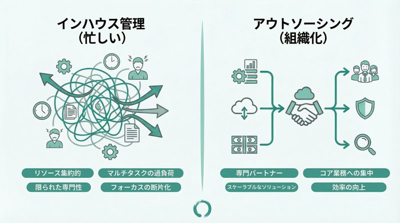

ホームページやWebシステムを運用する上で、避けて通れないのが「サーバー管理」です。
「なんとなく社内の詳しい人に任せている」「制作会社に頼んだままで詳細がわからない」といったケースは少なくありません。
しかし、サーバーは24時間365日動かし続ける重要なインフラです。もし突然ダウンしたり、不正アクセスを受けたりした場合、その損害は計り知れません。社内で片手間に管理するには、あまりにもリスクが大きい業務と言えます。
この記事では、サーバー管理を外注するメリットや費用相場、そして業者選びのポイントについて、Web制作・運用のプロの視点から解説します。
サーバー管理とは？なぜ重要なのか
ホームページが表示される仕組みの根幹にあるのが「サーバー」です。家で言えば土地のような存在で、これがなければどれほど立派な家（ホームページ）を建てても、誰も訪れることができません。
サーバーは「24時間365日」動き続けている
店舗のシャッターは夜には閉まりますが、ホームページは深夜でも早朝でも閲覧可能です。これはサーバーが休むことなく稼働し続けているからです。
しかし、機械である以上、故障のリスクやシステムの不具合、外部からの攻撃など、常にトラブルの種を抱えています。「何もしていないのに急に見られなくなった」というトラブルは、実はバックグラウンドで頻繁に起きており、管理者が未然に防いだり、即時復旧したりしているからこそ、普段通り閲覧できているのです。
放置すると起こる3つのリスク
サーバー管理が適切に行われていない場合、以下のようなリスクが高まります。
- 機会損失：アクセス集中などでサーバーが落ちた際、復旧対応が遅れ、その間の売上や問い合わせを逃してしまう。
- データ消失：バックアップを取っていなければ、操作ミスやハッキングでデータが消えた際に復元不可能になる。
- セキュリティ事故：OSやミドルウェアのバージョン更新を怠ると、脆弱性を突かれてサイト改ざんや情報漏洩につながる。
サーバー管理を外注する3つのメリット
これらのリスクを回避するために最も効果的なのが、「サーバー管理のプロへの外注」です。
1. 専門家による安定稼働とセキュリティ対策
サーバー管理会社は、ハードウェアの監視、OSのアップデート、セキュリティパッチの適用などを日常的に行っています。
最新のハッキング手口や脆弱性情報にも精通しているため、社内担当者が片手間で調べるよりも圧倒的に安全性が高まります。
特にWordPressなどのCMSを利用している場合、プラグインや本体の更新による不具合も頻発します。専門家なら、テスト環境での検証や、万が一の際のバックアップからの復元もスムーズに行えます。
2. 社内担当者の負担軽減と属人化の解消
「社内のパソコンに詳しい◯◯さん」にサーバー管理を任せている企業は多いですが、これは非常に危険です（「属人化」のリスク）。
その担当者が退職したり、病気で休んだりした時にトラブルが起きたらどうなるでしょうか？IDやパスワードがわからず、誰も手を出せないという事態になりかねません。
外注化することで、誰でも管理状況を把握できる体制を作り、担当者の本業への集中を促すことができます。
3. トラブル時の迅速な対応と復旧
サーバーダウンなどの緊急事態は、予期せぬタイミングで起こります。
社内管理の場合、休日や深夜に対応するのは困難です。外注していれば、緊急連絡先への通報や、契約内容に応じた復旧作業を行ってもらえます。「何かあってもプロが付いている」という安心感は、精神的にも大きなメリットです。
サーバー管理外注の費用相場
では、実際に外注するとどれくらいの費用がかかるのでしょうか。サーバーの種類やサポート範囲によって異なりますが、一般的な目安をご紹介します。
費用相場の目安（月額）
- 共用サーバー保守：5,000円〜30,000円
一般的なコーポレートサイト向け。ドメイン・サーバー費込みの場合も。- VPS・クラウドサーバー保守：30,000円〜100,000円
アクセス数が多いサイトや、Webシステム向け。root権限での詳細な設定が可能。- 専用サーバー保守：100,000円〜
大規模ECサイトやセキュリティ要件が極めて高い場合。
費用に含まれる主な作業内容
金額だけで比較せず、「何をしてくれるか」を確認することが重要です。一般的には以下の項目が含まれます。
- サーバー・ドメインの契約更新代行
- OS・ミドルウェアのアップデート
- 死活監視（サーバーが動いているかのチェック）
- 定期バックアップの取得
- 緊急時の復旧対応（※回数制限がある場合も）
- SSL証明書の更新
株式会社ミアキスのサーバー保守・管理サポート
私たち株式会社ミアキスでは、埼玉・戸田市エリアを中心に、中小企業様のサーバー管理代行を承っています。
Web制作会社だからこそ、インフラだけでなく、「サイトの中身（WordPress等）」も含めた総合的な保守が可能です。
「今のサーバーが古くて遅い」「管理画面のログイン情報すらわからない」といった状態からのご相談も歓迎です。現状を調査し、最適なプラン（場合によってはサーバーの移転など）をご提案いたします。
- 定期バックアップ：万が一のデータ消失に備え、外部ストレージへ自動バックアップ。
- WordPress保守：本体やプラグインのアップデート代行・検証。
- 365日監視：サイトのダウンを検知し、迅速に復旧作業へ。
費用も、貴社の規模やサイトの重要度に合わせて柔軟にプランニング可能です。まずはお気軽にお見積りをご依頼ください。
よくある相談事例
実際に弊社に寄せられる、サーバー管理に関するご質問の一部をご紹介します。
まとめ：サーバー管理の外注は「安心」と「時間」を買う投資
サーバー管理は、一見すると「何も起きていない時はコスト」に見えるかもしれません。しかし、それは「何も起きないように守っている」からです。
トラブルが起きてから慌てて対応するコストや、ビジネスが止まる損失を考えれば、プロに任せる月額費用は決して高いものではありません。
社内のリソースを本来の業務（営業や商品開発など）に集中させるためにも、ぜひサーバー管理のアウトソーシングを検討してみてください。